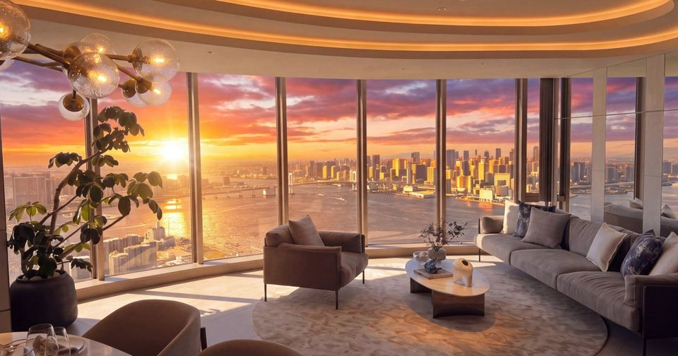
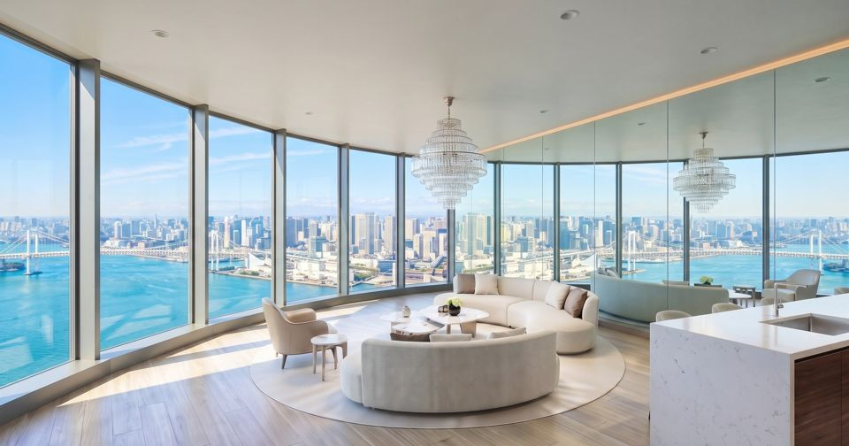
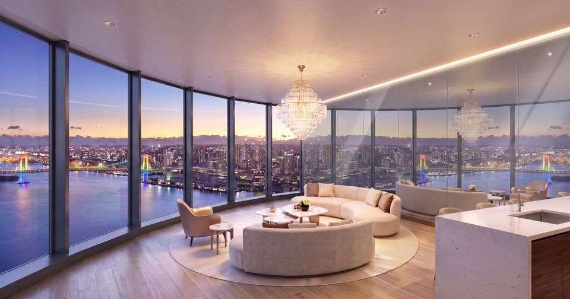
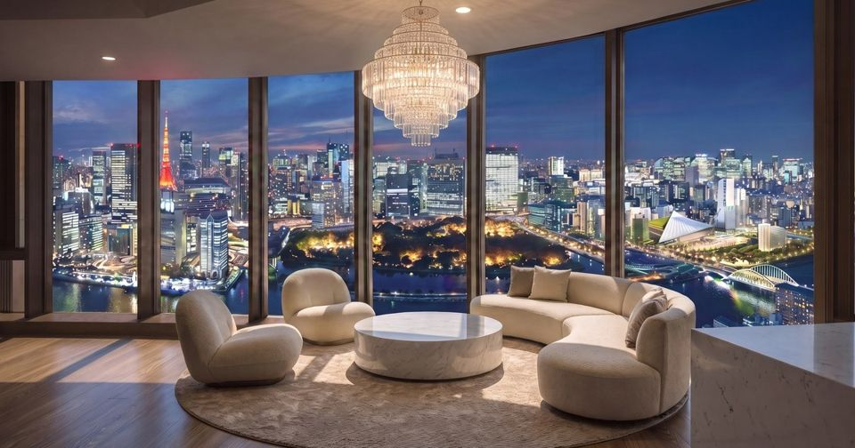
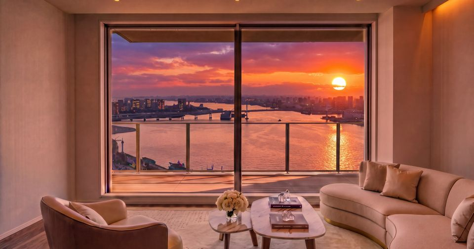

THE TOYOMI TOWER MARINE & SKY
ザ 豊海タワー マリン＆スカイTHE TOYOMI TOWER MARINE & SKY丰海塔 MARINE & SKY
東京湾の最前列、地上53階。On the front row of Tokyo Bay, 53 floors.东京湾第一排，地上53层。
東京都中央区豊海町／都営大江戸線「勝どき」駅 徒歩10分／地上53階・総戸数2,046戸／2026年11月竣工予定Toyomi-cho, Chuo-ku, Tokyo / 10 min walk to Kachidoki Sta. / 53 floors, 2,046 homes / Completion Nov 2026东京都中央区丰海町／都营大江户线「胜哄」站 步行10分钟／地上53层・2,046户／2026年11月竣工预定
掲載中 6住戸6 residences available在售 6套

物件サイトを見るView residence查看房源E520952F
東ウイング52階、東京湾を一望East Wing 52F, sweeping bay views东栋52层 一览东京湾
- 52階52F52层
- 南向きSouth朝南
- 2LDK+WIC+SIC+WIP
- 126.26㎡
販売価格5億6,500万円Price¥565,000,000售价人民币 2,400万元

物件サイトを見るView residence查看房源W451645F
西ウイング45階、レインボーブリッジを望むWest Wing 45F, Rainbow Bridge views西栋45层 远眺彩虹大桥
- 45階45F45层
- 南西向きSouthwest朝西南
- 2LDK+2WIC+SIC
- 106.82㎡
販売価格3億9,900万円Price¥399,000,000售价人民币 1,690万元

物件サイトを見るView residence查看房源W441644F
西ウイング44階、東京湾の永久眺望West Wing 44F, protected bay views西栋44层 永久东京湾景观
- 44階44F44层
- 南西向きSouthwest朝西南
- 2LDK+2WIC+SIC
- 106.82㎡
販売価格3億9,500万円Price¥395,000,000售价人民币 1,680万元

物件サイトを見るView residence查看房源W490249F
49階、東京タワーと浜離宮を一望49F, Tokyo Tower & Hama-rikyu views49层 尽览东京塔与滨离宫
- 49階49F49层
- 北西向きNorthwest朝西北
- 2LDK+2WIC+SIC
- 85.03㎡
販売価格2億7,900万円Price¥279,000,000售价人民币 1,180万元

物件サイトを見るView residence查看房源E411541F
東ウイング41階、南向きのベイビューEast Wing 41F, south-facing bay view东栋41层 朝南海景
- 41階41F41层
- 南向きSouth朝南
- 2LDK+WIC+SIC
- 61.33㎡
販売価格1億5,900万円Price¥159,000,000售价人民币 670万元
 物件サイトを見るView residence查看房源
物件サイトを見るView residence查看房源W400440F
40階、浜離宮・築地を望む40F, views of Hama-rikyu & Tsukiji40层 远眺滨离宫・筑地
- 40階40F40层
- 北向きNorth朝北
- 1LDK
- 45.25㎡
販売価格9,800万円Price¥98,000,000售价人民币 415万元